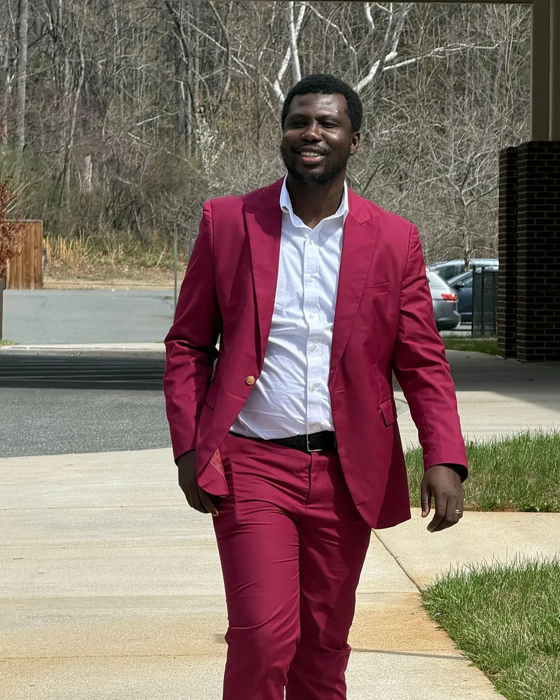

About Modern Music Hub
Music skills for a bigger you.
We started Modern Music Hub because the way most people are taught music leaves out the part that makes it fun: playing what you hear, making your own sound, and sharing it with people.

Founder
Stephen Amanor Sackey
Stephen started in Accra, Ghana, playing keyboard by ear and directing music for churches and a live band. He went on to produce worship records and live albums, mix and master for independent artists, and build music software at Amanorsac Studio.
Today he directs music for a multicultural congregation in Virginia, runs its broadcast mix, and is finishing a master's in Commercial Music Performance at Liberty University.
Modern Music Hub is everything he wishes someone had shown him at fourteen: how chords really work, how to hear a song and play it, and how to turn an idea into a finished track.
What we believe
Real skills. Real music. Real progress.
Ears before paper
Reading music is a useful tool. Hearing music is the skill. We start with the ear and add theory when it helps you play.
Make, don't just study
Every level ends with something you can play or share. Momentum comes from finishing things.
Learn together
Teens and adults, in person and online. Music has always been something people do together, and that's how it sticks.
Come play with us.
Book a free trial lesson in Charlottesville or online.
Book my free lesson